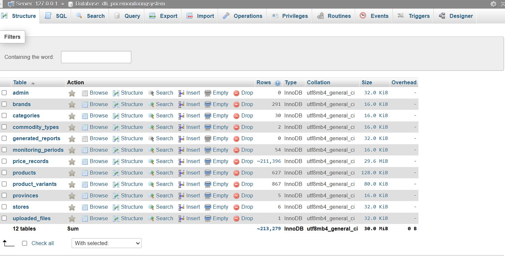

I pushed the overall backend module progress to approximately 88% and laid necessary groundwork for the final application through database updates. Because these changes introduced a complex bug, I spent the majority of my time investigating and code-tracing. I also prepared a comprehensive list of technical questions to discuss with my supervisor for targeted project support.
Key Tasks Accomplished
- Updated and edited the relational database structure.
- Troubleshooted a persistent bug caused by recent database modifications.
- Compiled a detailed list of technical queries for supervisor consultation.
Photo Documentation
